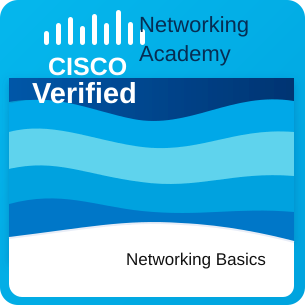

Udemy
Practical development courses
Add completed Udemy courses here, especially hands-on courses that connect to backend, systems, data, or full-stack projects.
Software developer portfolio
I'm Jason Dahan, a software engineer who brings systems-level fundamentals, disciplined execution, and practical problem solving to every project.
About me
I build software with a strong foundation in C, C++, Java, Python, data structures, operating systems, and compiler concepts. I like projects where correctness, structure, and clear thinking matter, from low-level systems work to practical web experiences.
My background combines software engineering education with infantry service, so I bring persistence, teamwork, ownership, and calm problem solving under pressure. I care about writing code that is understandable, maintainable, and useful to the people relying on it.
Education
My academic background supports the practical projects here: compilers, operating systems, networking, algorithms, databases, and object-oriented design.
2020 - 2025
The Open University of Israel
Courses & achievements
This section is ready for completed online courses, certificates, professional training, and technical achievements from providers such as Udemy, Coursera, Cisco, and other companies.
Udemy
Add completed Udemy courses here, especially hands-on courses that connect to backend, systems, data, or full-stack projects.
Coursera
Add completed Coursera certificates here, including university-backed courses or professional certificates that strengthen your technical profile.
Cisco Networking Academy
Completed Cisco Networking Academy's Networking Basics course, covering foundational networking concepts, connectivity, IP addressing, and core network communication.

Experience
Military service shaped how I approach difficult problems: stay focused, communicate clearly, support the team, and follow through when the stakes are high.
2015 - 2018
Military service
Served as an infantry soldier in a demanding operational environment built on discipline, readiness, teamwork, and responsibility under pressure.
Featured projects
Replace these cards with your live repositories, demos, or class projects as your portfolio grows. The robot keeps the pitch ready, then reacts with project-specific jokes when a visitor hovers.
A C project focused on lexical analysis, parsing, syntax validation, and building the early compiler stages that translate raw code into useful structure.
A low-level C project that reads assembly-style input, resolves symbols, validates instructions, and emits machine-friendly output.
A project concept for comparing sorting and graph algorithms with reusable data structures, performance notes, and readable object-oriented design.
A backend application idea that models courses, deadlines, and reminders with clean classes, validation rules, and API-friendly domain objects.
A Python workflow for cleaning datasets, generating summaries, and turning raw information into useful charts or reports for decision-making.
Skills and focus
Let's connect
Reach me on LinkedIn, send an email directly, or visit my GitHub to see more of my work and the projects behind this portfolio.